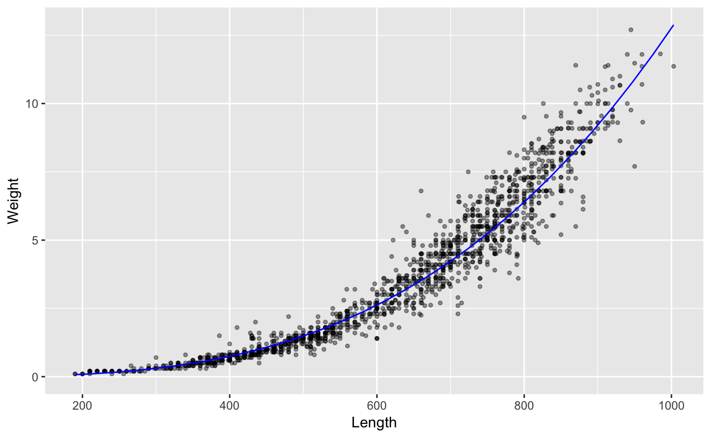
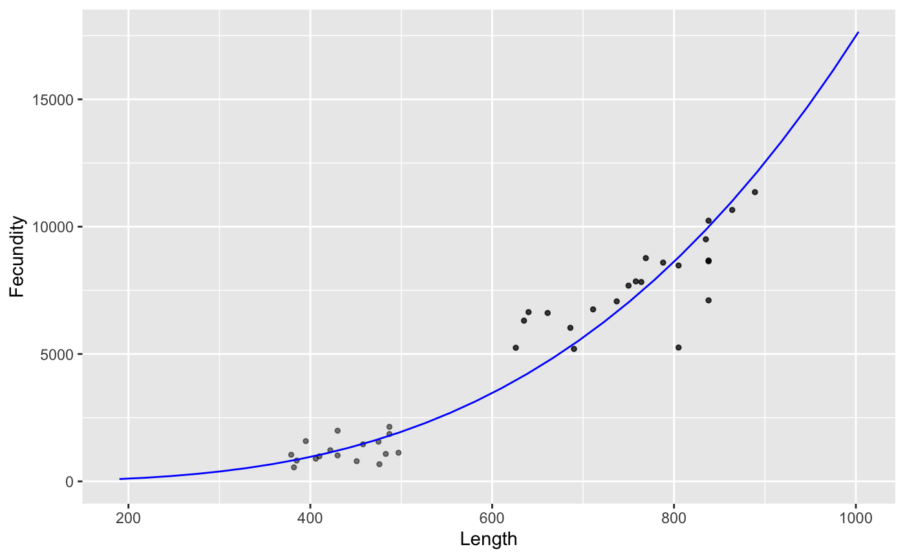
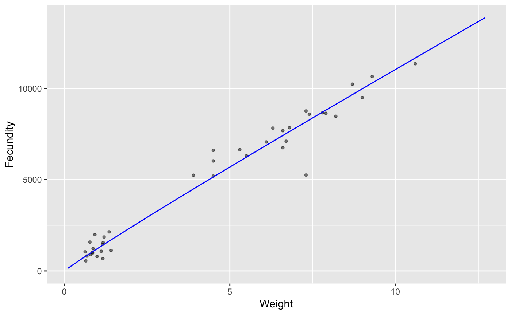

vignettes/allometry.Rmd
allometry.RmdHere we plot relationships between Rainbow Trout metrics and fit a linear model to estimate the allometric ralationships for:
library(ggplot2)
library(broom)
fish <- kootlake::fish
is.na(fish$Weight[is.na(fish$Weight) | fish$Weight == 0]) <- TRUE
WL_mod <- lm(log(Weight) ~ log(Length), data = fish)
WL_data <- data.frame(Length = seq(min(fish$Length), max(fish$Length), length.out = 30L))
WL_data$Weight <- exp(predict(WL_mod, newdata = WL_data))
ggplot(data = fish, aes(x = Length, y = Weight)) +
geom_point(alpha = 0.4, size = 1) +
geom_line(data = WL_data, col = "blue") +
expand_limits(y = 0)
FL_mod <- lm(log(Fecundity) ~ log(Length), data = fish)
FL_data <- data.frame(Length = seq(min(fish$Length), max(fish$Length), length.out = 30L))
FL_data$Fecundity <- exp(predict(FL_mod, newdata = FL_data))
ggplot(data = fish, aes(x = Length, y = Fecundity)) +
geom_point(alpha = 0.5, size = 1) +
geom_line(data = FL_data, col = "blue") +
expand_limits(y = 0)
FW_mod <- lm(log(Fecundity) ~ log(Weight), data = fish)
FW_data <- data.frame(Weight = seq(min(fish$Weight, na.rm = TRUE), max(fish$Weight, na.rm = TRUE), length.out = 30L))
FW_data$Fecundity <- exp(predict(FW_mod, newdata = FW_data))
ggplot(data = fish, aes(x = Weight, y = Fecundity)) +
geom_point(alpha = 0.5, size = 1) +
geom_line(data = FW_data, col = "blue") +
expand_limits(y = 0)